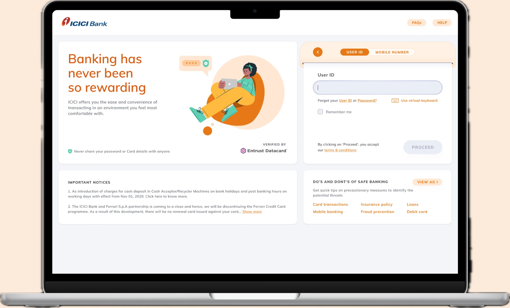

Kritika Singh is a product designer who teaches AI to ask before it acts.



Built by KritikAI
Agents I designed and coded myself with the Claude API.
- Job tracking agent Tracks a job search end to end. I designed how it breaks down the work, what it checks, and when it hands back to me. Claude API
- Job monitor agent Watches for new roles that fit and tells me when something is worth a look. Claude API
- Content agent Writes posts for @archivingpresence, an account about interactive contemporary art. Claude API